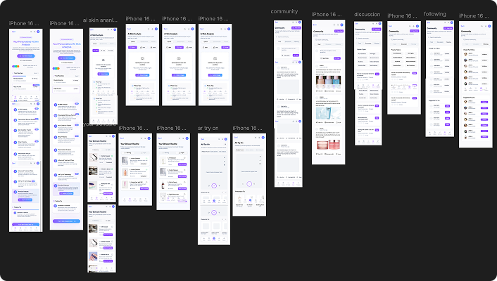
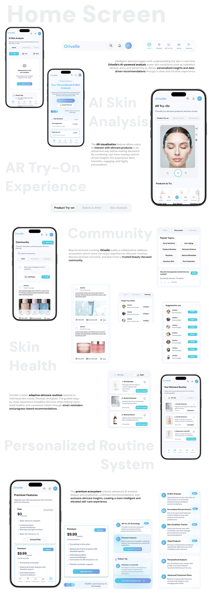
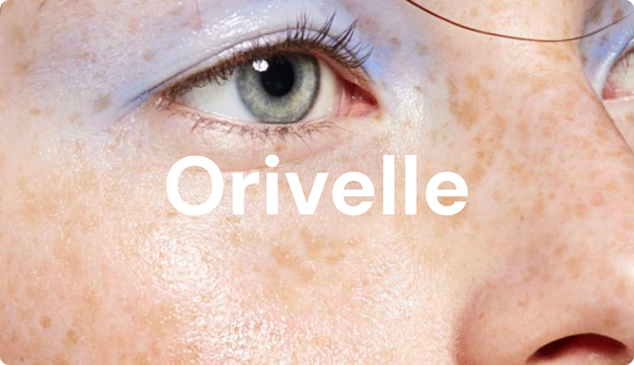

AI × AR SKINCARE EXPERIENCE
Orivelle
Making skincare feel personal, understandable, and less overwhelming.
TL;DR
Skincare is full of information, but information doesn't always make decisions easier. Orivelle is an AI-powered skincare experience that combines personalized recommendations with AR to help users understand their skin and make more confident product choices.
I worked across product strategy, UX/UI, interaction design, and visual design, shaping the experience from onboarding through personalized recommendations and AR interactions.
Background
Skincare has an information problem.
There are more skincare products than ever, but choosing between them still means navigating ingredients, skin concerns, routines, reviews, and increasingly complex product claims.
For someone who isn't a skincare expert, personalization can quickly become another layer of complexity.
Problem
More information doesn't mean better decisions.
Most skincare experiences focus on what to buy.
Orivelle explores a different approach, combining AI-driven personalization with visual interaction so recommendations feel less like a product list and more like guidance.
Process
Designing the experience
-
Understanding the user first
We structured the experience around the information needed to create a more meaningful skincare profile rather than treating every user as the same.
The goal was to make personalization feel useful without making onboarding feel like a questionnaire.
-
Turning AI into something understandable
An AI recommendation is only useful if the user understands what it means.
Instead of simply presenting a product, Orivelle connects the recommendation to the user's skin concerns and provides context around the decision.
Recommendation → Reason → Benefit → Next action
-
Bringing AR into the experience
AR wasn't introduced simply because it was technically interesting.
It became part of the experience where visualizing a product or outcome could make the decision feel more tangible.

Final Product
Orivelle
Orivelle is a concept skincare app that uses AI and AR to deliver personalized analysis, real-time visualization, and smart routines—turning skincare into a simple, data-driven experience.
The main goal of Orivelle is to eliminate guesswork in skincare by providing a unified platform that uses AI-driven analysis and AR-based visualization to deliver personalized, accurate, and easy-to-follow skincare solutions.

Reflections
Personalization isn't about asking more questions.
A more personalized experience doesn't necessarily need more inputs. It needs the right inputs, presented at the right moment.
AI needs an interface.
The intelligence of an AI product is only one part of the experience. The interface has to translate that intelligence into something people can understand and act on.
